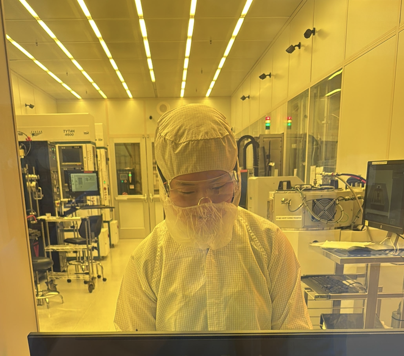
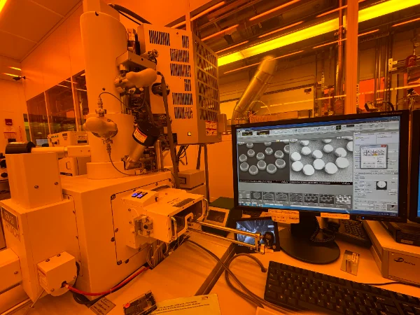
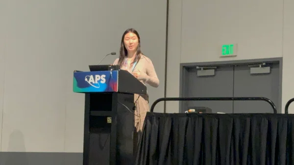
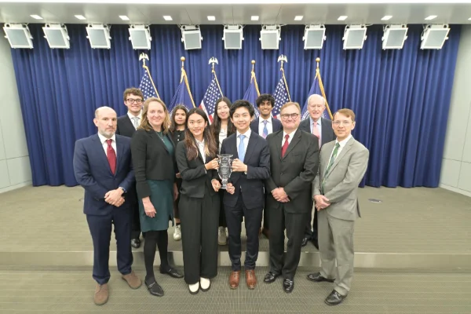
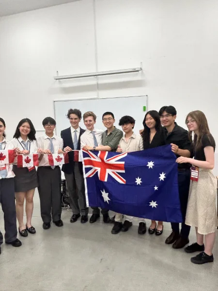
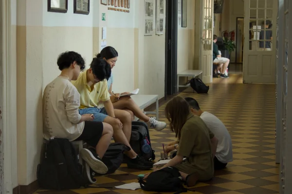
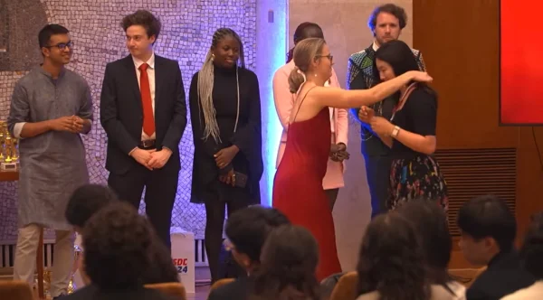
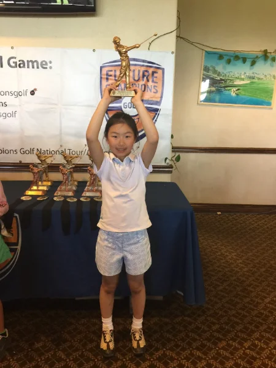
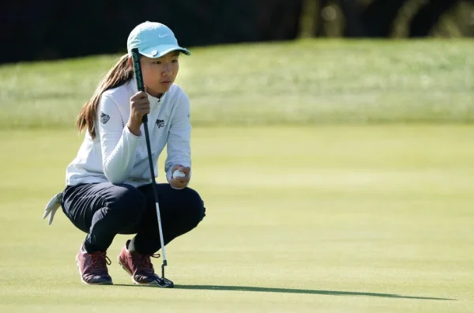

home
previously
Surface Acoustic Wave Metamaterials (Jan 2025 – May 2026)
In the Hoffman Lab at Harvard, I designed metamaterial devices that control the propagation of surface acoustic waves. I used COMSOL Multiphysics for simulation and electron beam lithography and metal deposition for nanofabrication. I presented this work at the American Physical Society's 2026 March Meeting.

Working in the cleanroom

SEM imaging of the device I fabricated

Presenting at APS March Meeting
Harvard Fed Challenge (2025)
I represented Harvard in the Federal Reserve's College Fed Challenge, a competition where college teams deliver monetary policy recommendations and answer Fed economists' technical questions. We placed second at Nationals after winning our regional and Boston rounds!

Awards ceremony at Nationals
Team Canada Debate (2023 – 2024)
Competing for Canada at the World Schools Debating Championships had been a dream of mine since I began debate in middle school. So despite how corny this sounds, making Team Canada in Grade 12 was a dream come true. After training for a full school year, I placed third individual speaker at WSDC 2024 in Serbia. Some of my speeches can be found here and here. I also won awards at 30 other debating tournaments, two of which were in French.

Competing against Team Australia

Preparing before a round

Awards ceremony at WSDC 2024
Team Canada Public Speaking (2023 – 2024)
I competed in four events at the 2024 World Individual Debating and Public Speaking Championship (WIDSPC) in Australia: persuasive speaking, extemporaneous speaking, interpretive reading and parliamentary debating. I made three out of the four finals, won parliamentary debating, and came fifth place overall speaker. My parliamentary debating grand finals speech can be found here. I also won awards at 10 other public speaking championships.
Golf (2012 – 2024)
I started playing competitive golf at seven. At 12, I became the youngest player to qualify for the Canadian Women's Open, which was covered by Global News, BBC, CBC, Sportsnet, Golf Digest, Golfweek. I was part of the Team Canada Junior Squad from 2021-2023, and the Amateur Squad from 2023-2024. I represented Canada at the 2022 World Junior Girls Championship and the 2022 Toyota Junior Golf World Cup. My other highlights include winning the 2017 IMG Junior World Championships and the 2017 U.S. Kids World Championships as well as competing in the 2021 U.S. Women's Amateur, the 2022 Canadian Women's Open, the 2023 Junior Invitational at Sage Valley, and the 2023 LPGA AJGA Mizuho Americas Open.

